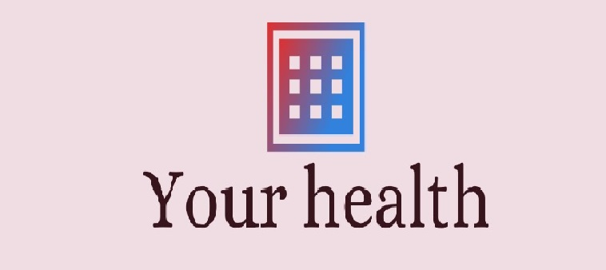

Login
Home
Pesquisa
Especialidades
Quem Somos
Outros
Cadastro
Fale Conosco
Campanhas
Avalie Nosso Site
Ajuda
Perfil
Sair
Janeiro Branco
Saúde Mental, Emocional e Bem-estar.
É um alerta sobre a saúde mental. As ações dessa campanha buscam ressaltar a importância de cuidarmos não só da parte física, mas como emocionais para o melhor equilíbrio e bem-estar
Fevereiro Roxo
Lúpus, Fibromialgia e Mal de Alzheimer.
Março Azul-Marinho
Cancêr Colorretal.
Abril Azul
Autismo.
É um dos meses que já tem campanha bem conhecida e estabelecida no mundo todo. O Abril Azul é voltado ao debate sobre o autismo, por causa do dia 02/04, que é data do “Dia Mundial de Conscientização do Autismo”.
Maio Amarelo
Segurança no Trabalho.
Junho Vermelho
Doação de Sangue.
O laço vermelho do sexto mês do ano é indicativo para a importância de doar sangue. Isso se deve ao dia 14/06, o “Dia Mundial do Doador de Sangue”. Junho ainda se colore de Laranja para a conscientizar sobre a anemia.
Junho Laranja
Anemia e Leucemia.
Junho Lilás
Teste do Pézinho.
Julho Amarelo
Hepatites Virais e Câncer.
Trás à tona a conscientização sobre o câncer ósseo e também as hepatites virais.
Agosto Dourado
Aleitamento Materno.
Nesse mês, entre os dias 01 e 07, acontece a “Semana Mundial da Amamentação”, por isso, o período é destinado às informações sobre o aleitamento materno.
Setembro Verde
Câncer de Intestino e Doação de Órgãos.
O período também destaca ações sobre a doação de órgãos e a prevenção do câncer no intestino.
Setembro Amarelo
Prevenção ao Suicídio.
Para ressaltar a importância de cuidarmos da saúde do coração.
Setembro Vermelho
Doenças Cardiovasculares.
Outubro Rosa
Câncer de Mama.
Foi uma das primeiras campanhas criadas (Iniciou nos Estados Unidos na década de 1990) e é dedicado à conscientização sobre o câncer de mama. Verde musgo câncer de figado.
Novembro Azul
Câncer de Próstata.
Chega para os homens quebrarem seus preconceitos históricos e conta com um logotipo em formato de bigode. Para conscientizar as pessoas sobre a importante de prevenir e combater o câncer de próstata. Além disso, a cor também serve para campanhas votadas aos cuidados da diabetes.
Novembro Dourado
Câncer Infantil.
Dezembro Laranja
Câncer de Pele.
O ano se fecha com cores vibrantes. O “Dezembro Laranja”, serve para conscientizar sobre a importância de combater o câncer de pele,.
Dezembro Vermelho
AIDS.
O “Dezembro Vermelho”, ressalta a necessidade de prevenir a AIDS.